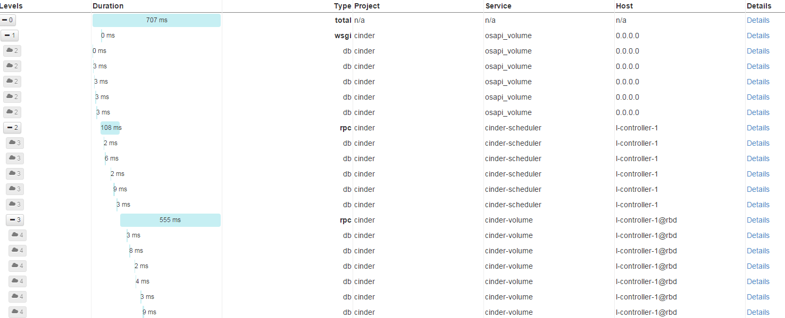

OSProfiler是Mirantis开发的用于做性能调试的工具，以切面编程的方式在程序中嵌入埋点，并将收集到的信息已MQ方式发送到ceilometer服务中， ceilometer将这些采样数据汇总，而后我们可以通过Ceilometer API来查看这些Profiler数据。
以cinder组件为例，我们来看一下使用方式
修改cinder的配置 启用profiler ，并重启cinder服务:
[profiler]
profiler_enabled = True
trace_sqlalchemy = True
修改私有的hmac_keys，配置文件在cinder的api-paste.ini文件中:
[filter:osprofiler]
paste.filter_factory = osprofiler.web:WsgiMiddleware.factory
hmac_keys = SECRET_KEY # 可以替换成自己的
enabled = yes
修改ceilometer配置，使其能够保存profiler采样数据，并重启ceilometer服务:
[event]
drop_unmatched_notifications = False
[notification]
store_events = True
disable_non_metric_meters = False
创建一块云硬盘并跟踪profiler信息:
$ cinder --profile SECRET_KEY create 5 --name test-profile-5
+---------------------------------------+--------------------------------------+
| Property | Value |
+---------------------------------------+--------------------------------------+
| attachments | [] |
| availability_zone | nova |
| bootable | false |
| consistencygroup_id | None |
| created_at | 2015-11-02T02:28:09.000000 |
| description | None |
| encrypted | False |
| id | 4aab5bb7-aae6-4613-ad5a-13c6600b3c8f |
| metadata | {} |
| migration_status | None |
| multiattach | False |
| name | test-profile-5 |
| os-vol-host-attr:host | None |
| os-vol-mig-status-attr:migstat | None |
| os-vol-mig-status-attr:name_id | None |
| os-vol-tenant-attr:tenant_id | 5e30ecc3c3434f24aa56801467ef1688 |
| os-volume-replication:driver_data | None |
| os-volume-replication:extended_status | None |
| replication_status | disabled |
| size | 5 |
| snapshot_id | None |
| source_volid | None |
| status | creating |
| user_id | 7e7c411d5d314d5a818361c19b85114c |
| volume_type | None |
+---------------------------------------+--------------------------------------+
Trace ID: 141925fb-c765-4a79-8522-160a091bd2ee
To display trace use next command:
osprofiler trace show --html 141925fb-c765-4a79-8522-160a091bd2ee
执行最后提示的osprofiler命令即可查看最终结果，结果样例类似这样:
